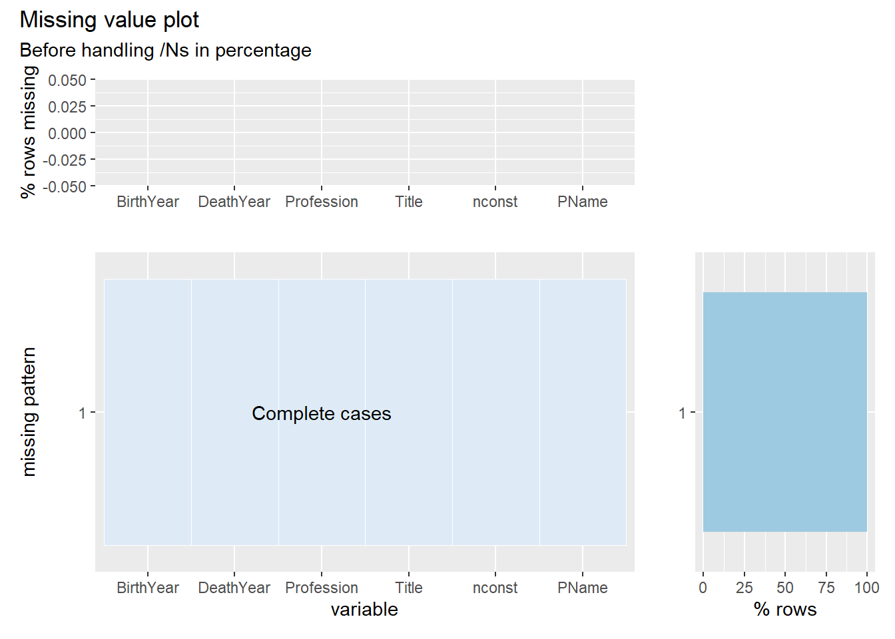
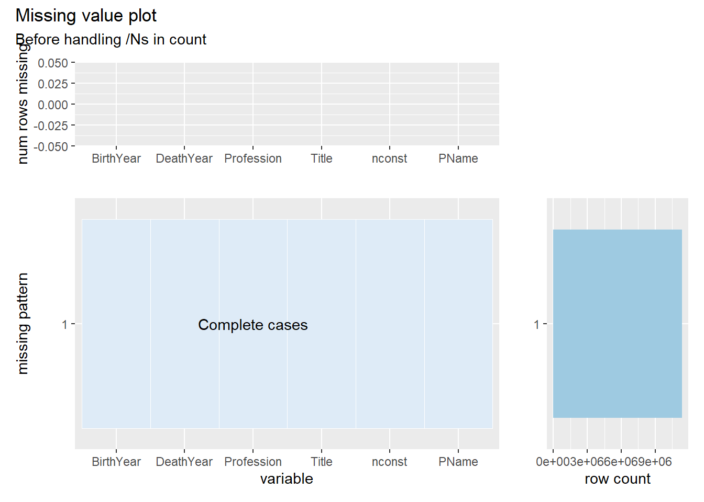
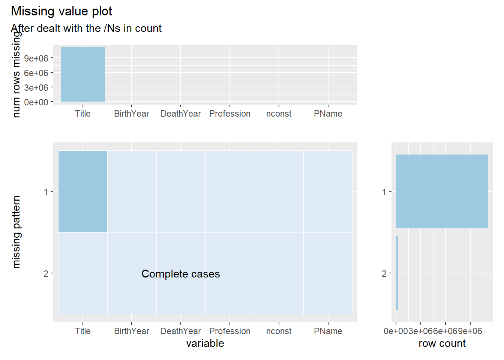

Chapter 4 Missing values
As the first two plots indicate, there are only missing values (‘NA’) in the primaryProfession column in the original data set. From the site, ‘’ is used by the creators to denote that a particular field is missing or null for that title/name and for the deathYear column if it is not applicable. Although we are unsure why the creators were not consistent with using ‘’ as their missing value indicator, we found ‘’ in columns birthYear, deathYear, and knownForTitle and ‘NA’ in only the primaryProfession column.After further analysis we made a few adjustments in order to clarify what data is actually missing data versus what data is not applicable for the respective column. For instance, if both birthYear and deathYear are ‘’ for a given individual we can assume with some certainty that the birthday for that individual was not publicly available whereas if an individual has a birthYear provided and a ‘’ in the deathYear column, we can assume the individual is still alive and therefore deathYear is not applicable for that individual. To deal with this discrepancy we replaced all birthYear ‘’ with ‘NA’ as they are true missing values and replaced deathYear ‘’ to ‘NA’ if the respective birthYear is ‘NA’. With this modification it is now clear which individuals are missing birth information (true missing value) versus which individuals are still living (not applicable).
